FEATURESこのゲームでできること
01
街のものを壊す
車・自販機・看板・バリケード…街のものはたいてい壊せる。壊すと鉄材やガラス、電子部品などの資材が飛び散る。
02
武器をクラフト
集めた資材でダイナマイト・ネオンソード・エネルギーガンを作れる。武器ごとに戦い方がまったく違う。
03
積んで、登る
ブロック・階段・床板を自由に設置。足場を積んでビルの屋上へ登り、光る「ゴールドカプセル」を集めよう。
04
にぎやかな電気街
ネオン管・箱看板・電光掲示板・壁面ポスター・動くLEDビジョン。100種類以上の看板と広告が、夜のアキバを埋め尽くす。
05
ボス戦と花火
ガチャロボを倒してメーターを溜めると、中ボス「キャプテン・ガチャ」が出現。倒せば夜空に花火が上がる。その先には、さらなる強敵も……?
WORLDネオンの街へようこそ
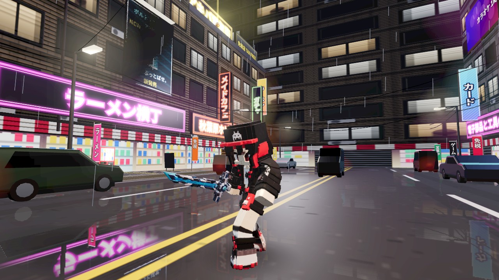
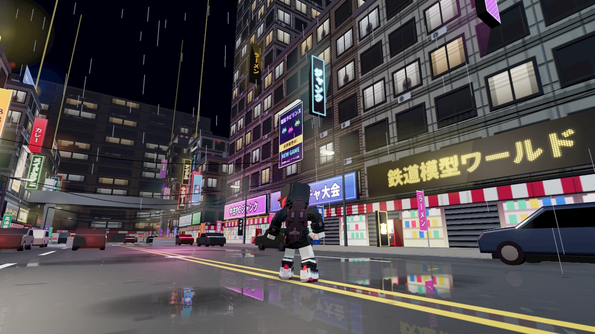
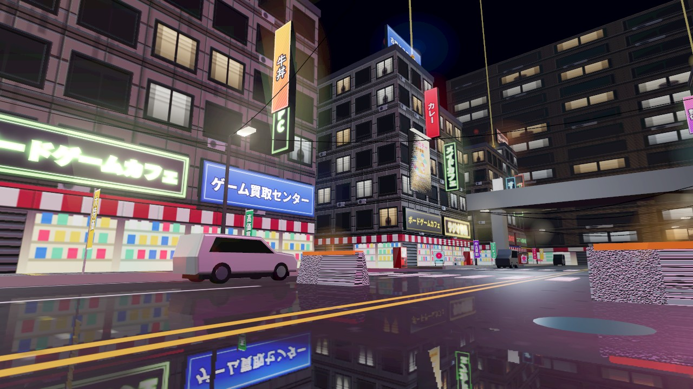
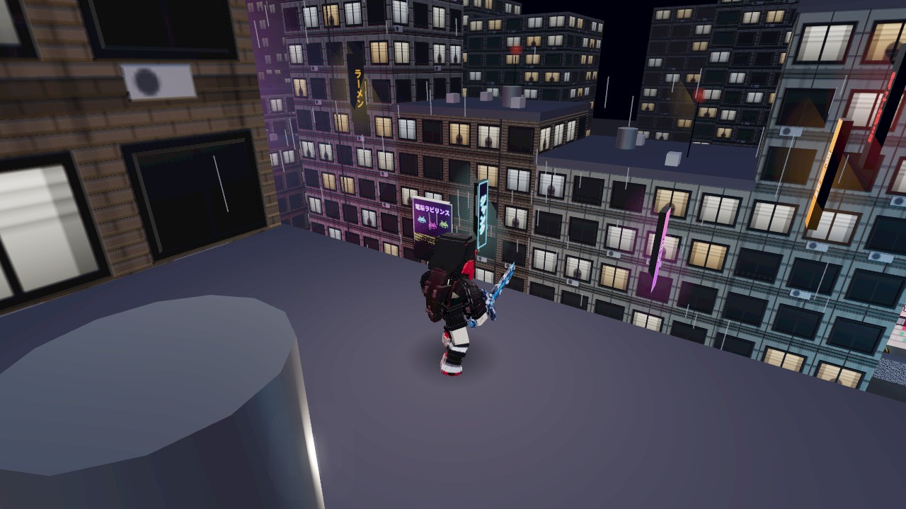
HOW TO PLAYゲームの流れ
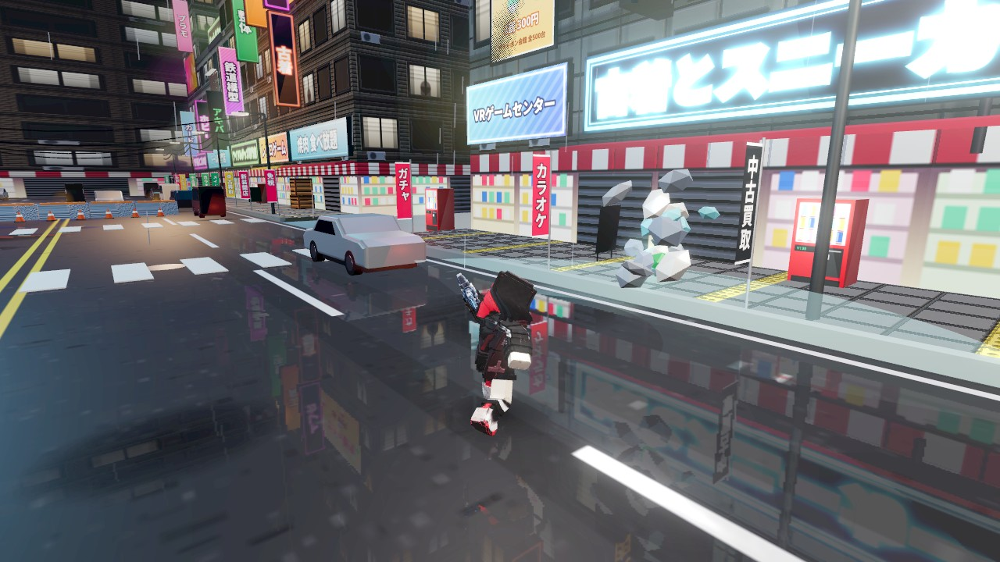
1. 壊す車や自販機、看板などを攻撃して壊す。壊せる物は街じゅうにある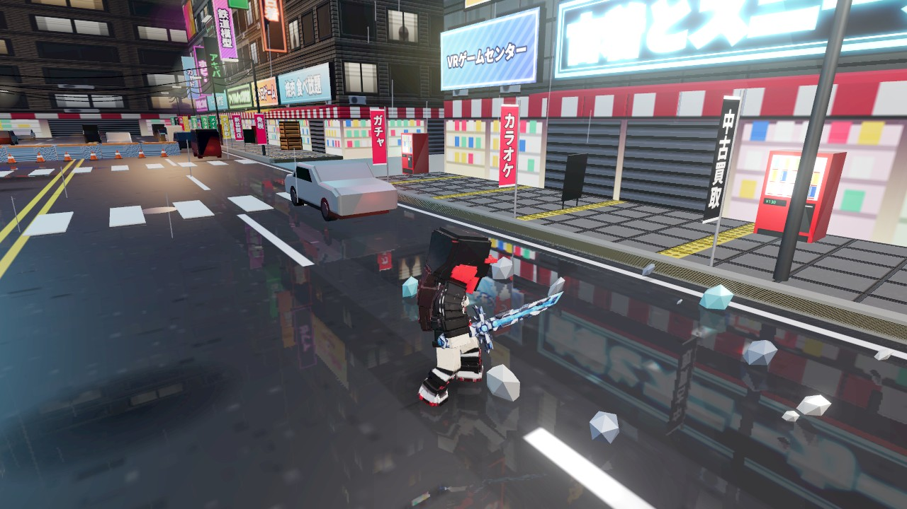
2. 集める飛び散った資材(鉄材・ガラス・電子部品など)は、近くを歩くだけで拾える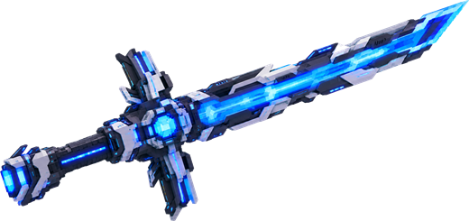
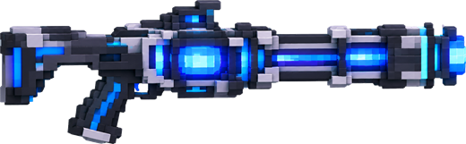
3. 作るC キーのクラフト画面で、資材から武器を作る(ネオンソード・エネルギーガン・ダイナマイト)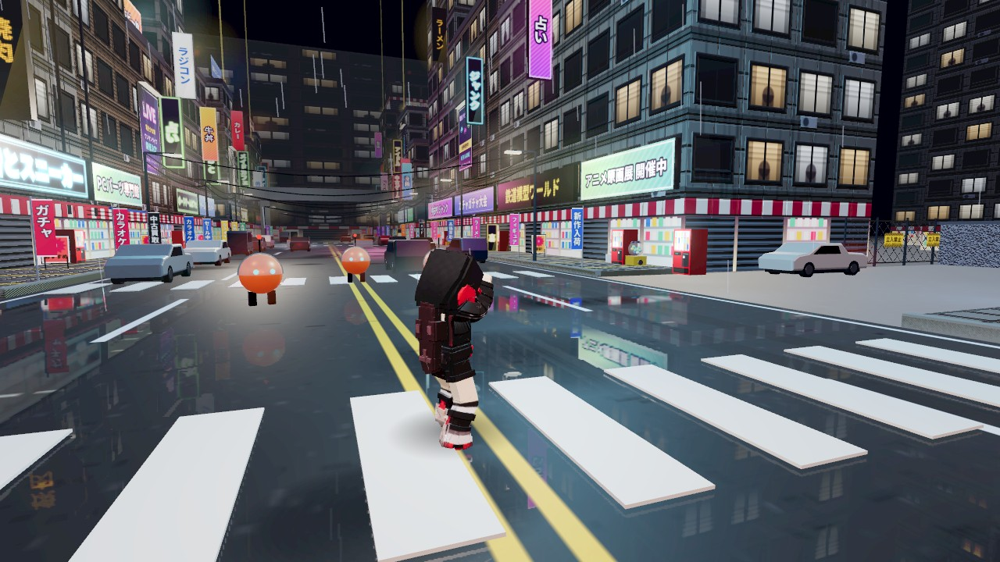
4. 戦う襲ってくるガチャロボを倒すと、画面上のメーターが溜まっていく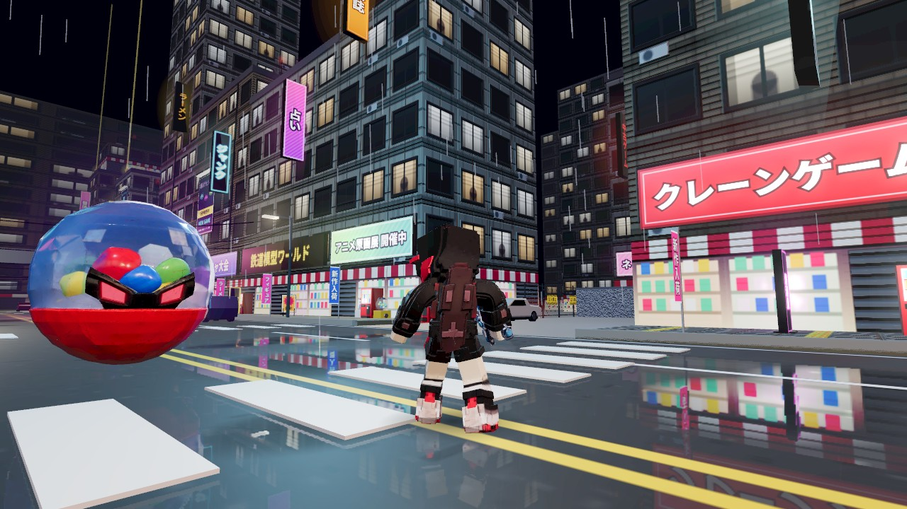
5. ボス出現メーターが満タンになると、中ボス「キャプテン・ガチャ」が現れる!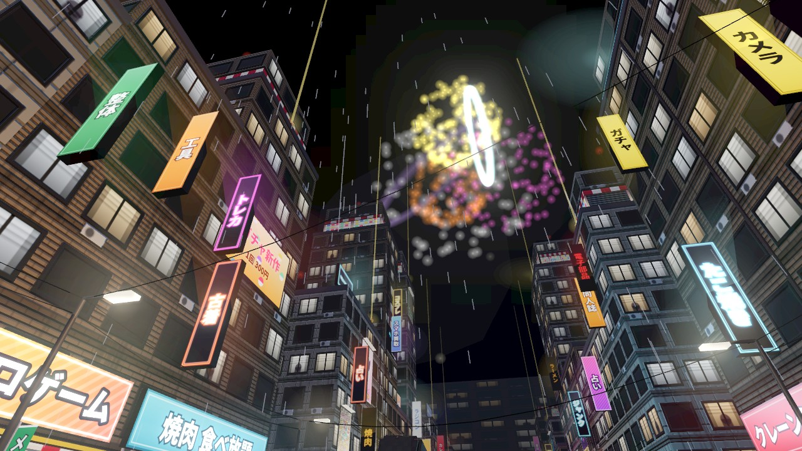
6. 花火ボスを倒すと夜空に花火が上がる。……でも、その先にはさらなる強敵が?
はじめて遊ぶときは、移動・視点・ジャンプ・攻撃・クラフトのかんたんなチュートリアルから始まります(途中でやめることもできます)。
CONTROLS操作方法(PC)
移動・視点
| WASD | 移動(前は画面の奥の方向) |
|---|---|
| Shift 押しっぱなし | ダッシュ |
| Space | ジャンプ(一回押しで小ジャンプ、長押しで大ジャンプ) |
| 画面をクリック → マウス | 視点を動かす(Esc でマウスを戻す) |
| ←→↑↓ | キーで視点を動かす |
| V / ホイール押し | 視点をキャラの真後ろに戻す |
戦闘・クラフト・建築
| E / 左クリック | 攻撃・壊す(押しっぱなしで連続) |
|---|---|
| 右クリック | ソードの薙ぎ払い / 銃ののぞき込み |
| 1〜4 | 武器の持ち替え |
| C | クラフト画面を開く |
| B | 戦闘モード ⇄ 建築モード |
| F / 右クリック(建築) | ブロックを置く(R で形を変更) |
| Q | ポーションで回復 |
| Esc | ポーズ(設定・セーブ・チュートリアル見直し) |
INFORMATION動作環境・クレジット
動作環境
- PC(Windows / Mac)の最新版 Chrome または Edge を推奨
- 3D表示(WebGL)に対応したブラウザが必要です
- キーボードとマウスでの操作を推奨(スマホはタッチ操作に対応していますが、PCの方が快適です)
- 初回はゲームデータ(約25MB)の読み込みがあります
- 進行状況はブラウザに自動でセーブされます(同じブラウザで続きから遊べます)
- 重いと感じたら、ポーズ画面の「画質: 軽量」に切り替えてください
クレジット
- 3Dモデル(キャラクター・武器・ボス): Meshy AI(CC BY 4.0)
- キャラクターアニメーション: Adobe Mixamo
- 3D描画: three.js(MIT License)
- フォント: Dela Gothic One / Noto Sans JP(Google Fonts、SIL Open Font License)
- 街並み・小物・効果音・BGM: すべてプログラムで生成